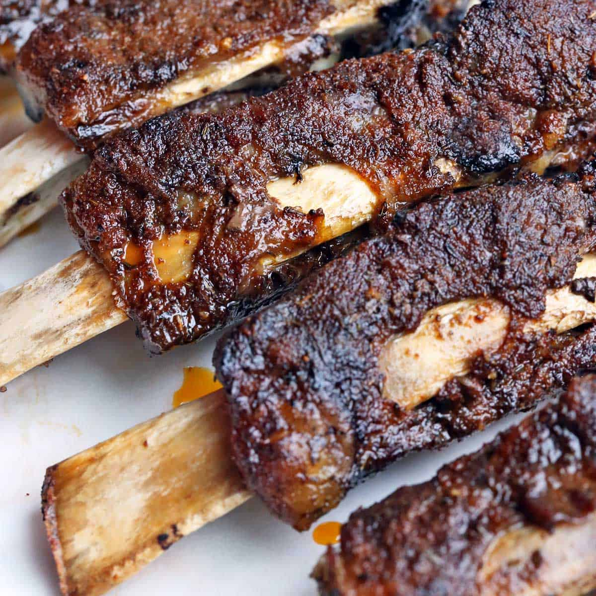

Beef Ribs

Description
Slow cooker ribs recipe with homeade BBQ sauce.
Ingredients
Steps
Combine water, ketchup, tomato paste, brown sugar, vinegar, mustard, and salt
in a slow cooker; stir well to dissolve brown sugar and salt.
Place short ribs into the sauce and stir to coat.
Cover and cook until ribs are tender, about 8 hours on Low or 4 hours on High.